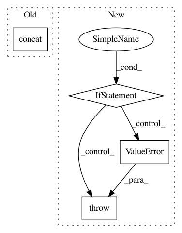

080080a547e9d89adf4393c2a349544443c35962,rnaseq/src/aggregate_rnaseqc_metrics.py,,,#,6
Before Change
assert len(args.annotation_tsvs)==len(annotation_headers)
path_s = pd.read_csv(args.input_files_tsv, sep="\t", index_col=0, header=None, names=["sample_id","metrics_path"])["metrics_path"]
metrics_df = pd.concat([pd.read_csv(i, sep="\t") for i in path_s], axis=0)
metrics_df.index = metrics_df["Sample"]
// add optional annotations as additional columns
for h,tsv in zip(annotation_headers, args.annotation_tsvs):
After Change
df = pd.read_csv(path_s.iloc[0], sep="\t", header=None)
if df.shape[0]==2: // RNA-SeQC v1.1.9
dfs = [pd.read_csv(i, sep="\t") for i in path_s]
elif df.shape[1]==2: // RNA-SeQC v2
dfs = [pd.read_csv(i, sep="\t", header=None, index_col=0).T for i in path_s]
else:
raise ValueError("Unrecognized input format (shape {}).".format(df.shape))
metrics_df = pd.concat(dfs, axis=0)
metrics_df.index = metrics_df["Sample"]
// add optional annotations as additional columns
In pattern: SUPERPATTERN
Frequency: 3
Non-data size: 4
Instances
Project Name: broadinstitute/gtex-pipeline
Commit Name: 080080a547e9d89adf4393c2a349544443c35962
Time: 2017-08-18
Author: francois@broadinstitute.org
File Name: rnaseq/src/aggregate_rnaseqc_metrics.py
Class Name:
Method Name:
Project Name: QUANTAXIS/QUANTAXIS
Commit Name: 4ba63dbf0e5142603267d2e13ab0fb9762bd7151
Time: 2018-06-04
Author: 604829050@qq.com
File Name: QUANTAXIS/QAData/base_datastruct.py
Class Name: _quotation_base
Method Name: select_time_with_gap
Project Name: asyml/texar
Commit Name: b5c8bdd81be77eac5434a476f62c5bdef56f1838
Time: 2019-07-01
Author: haoranshi97@gmail.com
File Name: texar/modules/embedders/position_embedders.py
Class Name: SinusoidsPositionEmbedder
Method Name: __init__